This guide describes how to do SMD soldering, using tweezers, solder paste, and a heat gun.
Before you get started, you'll want to organize all the SMD parts on the circuit. The solder paste we use will dry quickly, so we want to be ready to add the SMD parts to the paste right away.
Get a piece of printer paper, and stick on a long piece of double-sided tape.
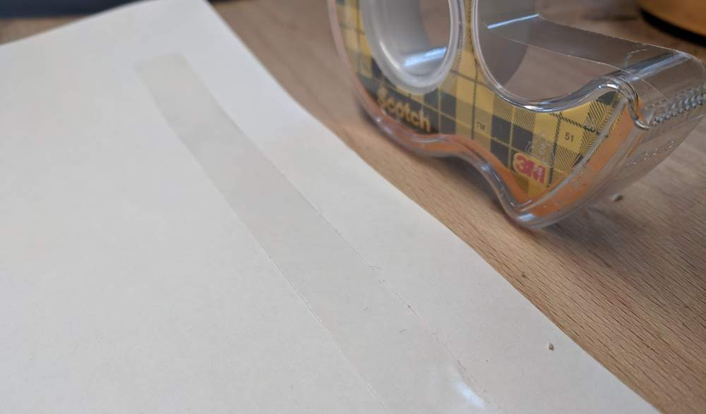 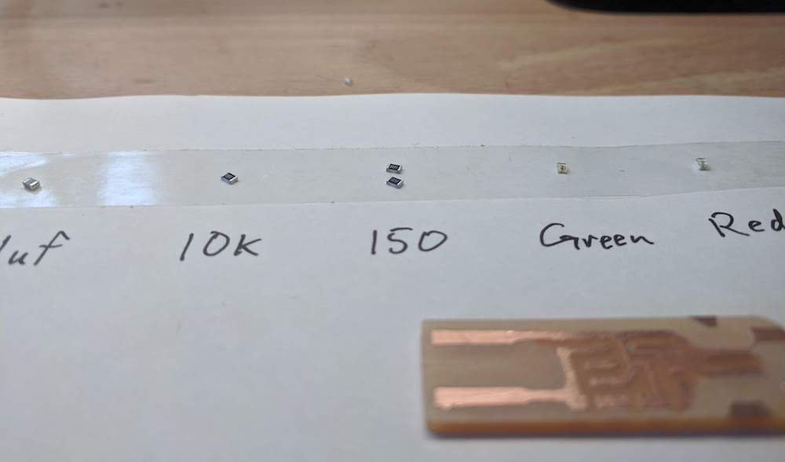Take each of the parts that will be on your circuit, and place them on the tape (using tweezers). Then with a pen, write down the value of the part.
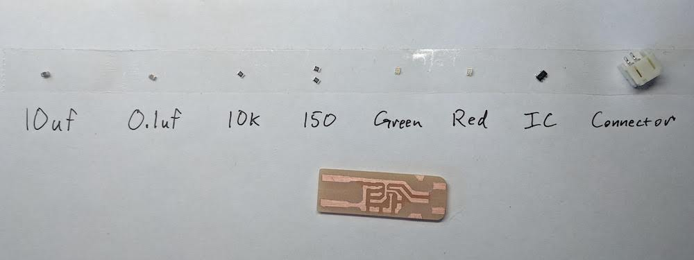The LEDs in this circuit have a polarity, one side is positive and the other side is negative. We need to mark which side is which, so that we place it correctly on our circuit.
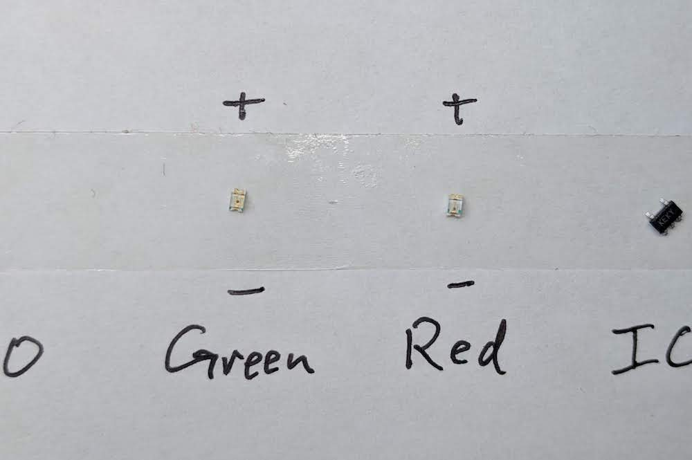SMD LEDs have a marking on them that labels the negative (cathode) side. The marking could be anything (ink, cutout, on top, on bottom), but it is always on the negative side.
If I look closely, I see that my LEDs have a small marking on the top side. Those marks mean that is the negative side.
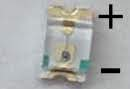A soldering iron is too big for these small parts, so we'll use solder paste to weld them to the copper board.
Remove a small amount of paste (I used a plastic knife), and place it on your paper.
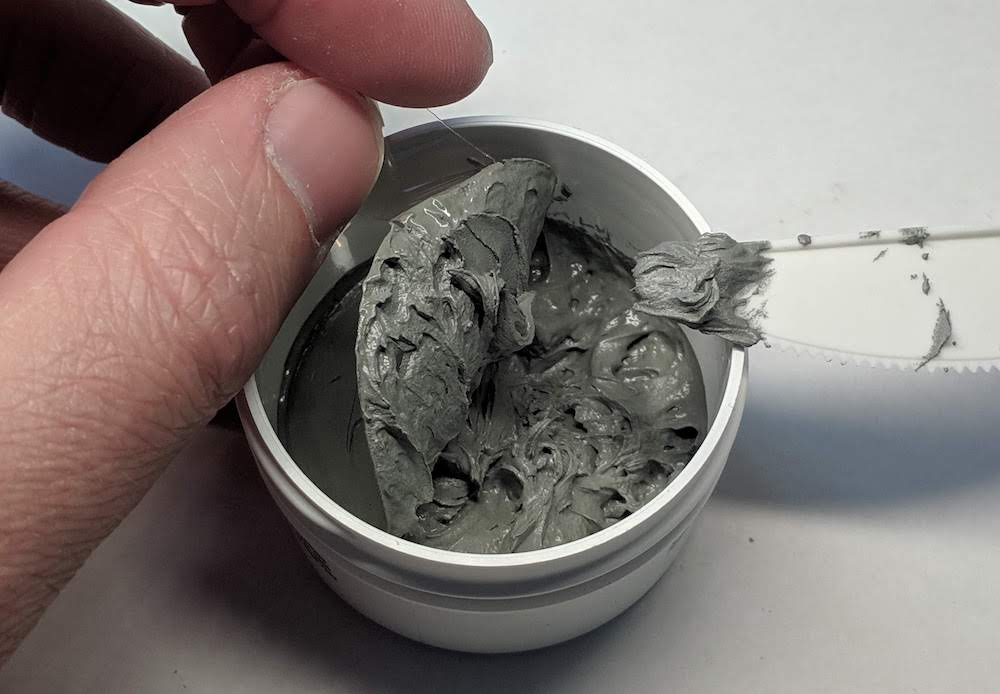 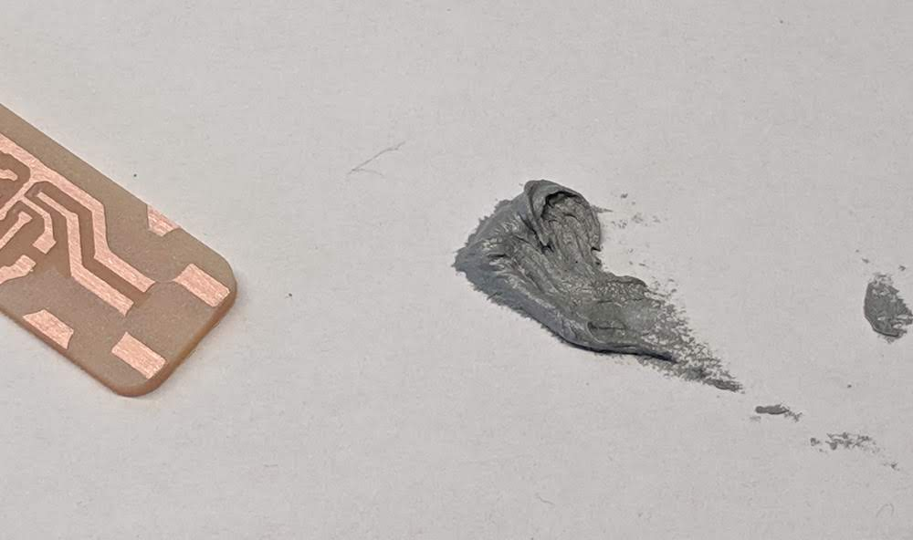Use a push-pin or sewing needle to place solder paste on your circuit's pads.
Try to only have solder paste on each copper pad, and no where else. Not the spaces between, and not the copper traces between pads.
Here is a video of me placing solder paste with a push-pin.
If you ever want to start over, you can easily clean the board with 91% isopropyl alcohol and a paper towel.
Before the solder paste gets dry, we need to put our SMD parts onto their correct pads. We'll use tweezers and our hands to do this.
One by one, go through teach part on your double-side tape. Pick them up from the tape using precision tweezers.
Here is a video of each SMD part being placed down onto it's correct pad.
When you are placing an SMD part, there are three steps:
(sorry for the shaky video, the paper underneath was moving a lot)
Very gently place your PCB on a heated coffee mug heater. This thing will bring your board to about 85 Celsius.
Keep your board there for 1-2 minutes. You will notice the solder paste gets a little puffy.
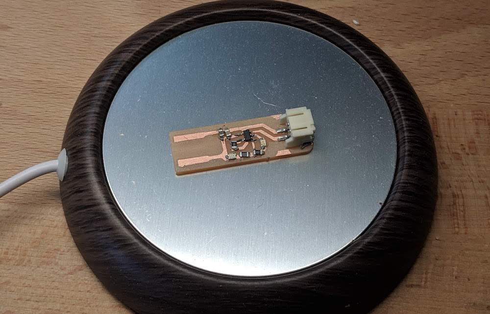After 1-2 minutes on the mug heater, it's time to use the heat gun.
Heat guns have different sized nozzles that. When heating all the parts on a PCB, use no nozzle so the hole is wide.
You would really only use the smaller nozzle if you are trying to heat just one small spot.
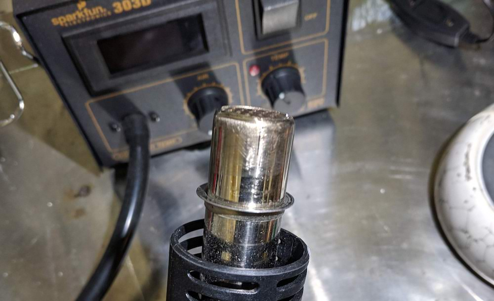 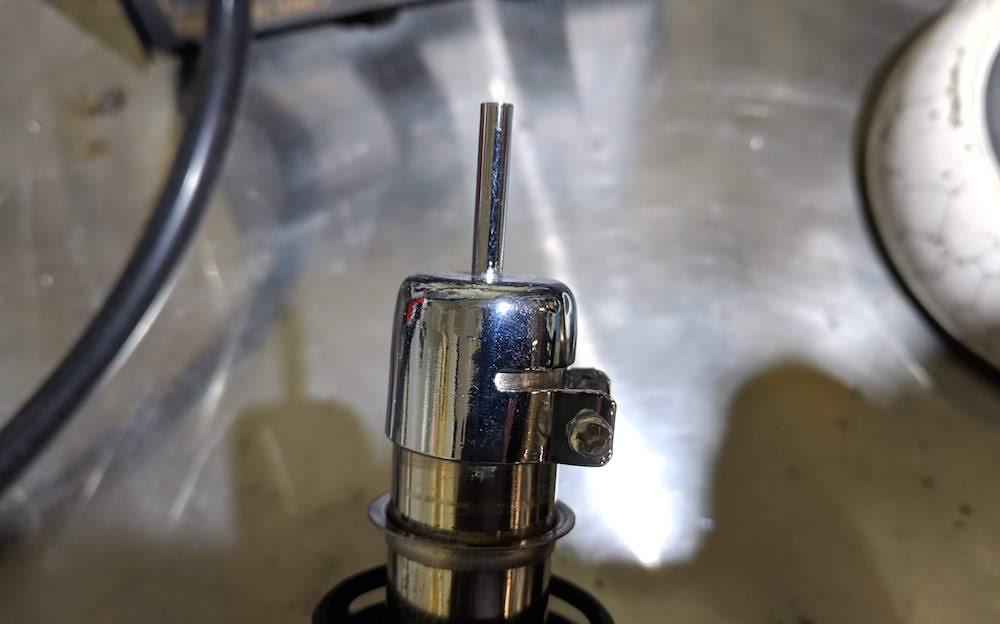With no nozzle attached, turn the heat gun on with the settings:
Solder paste melts at around 250 Celsius. If your solder does not melt within 10 seconds, try raising it up to 275 Celsius.
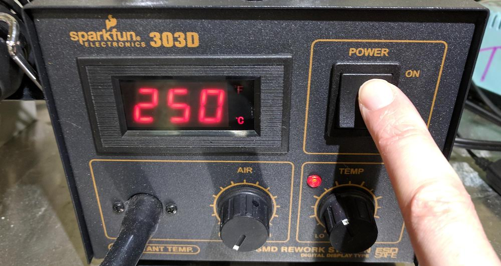The PCB should have been on the hot mug heater for 1-2 minutes now. Hold the heat gun straing down (90 degrees), just over the PCB. Move the nozzle from side to side, to heat up all areas of the board.
When the solder paste turns shiny and silver, it is done melting. Move the heat gun closer to un-melted solder. Do not heat any SMD parts for more than 10-20 seconds, as you might damage them.
Take a look at your PCB, with your eyes or under a microscope. Make sure all the pads have fully melted solder paste (silver and shiny), and that all your parts did not accidentally move while the past was melting.
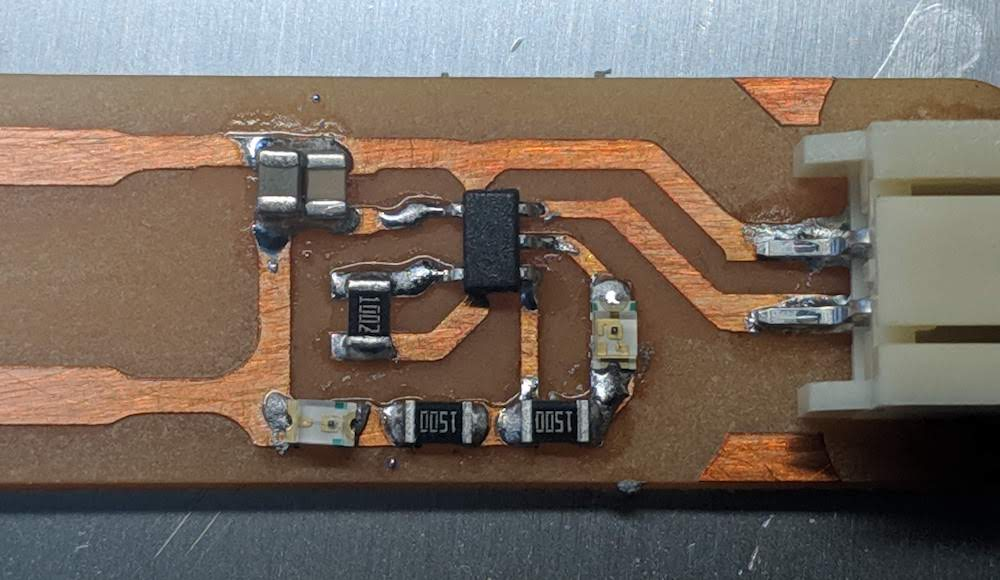